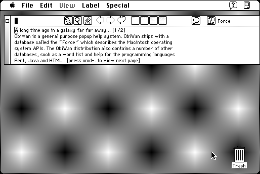

Download
obiwan-52.zip (1.3M) ObiWan 5.2 repackaged into a zipped hfs disk image and checksum file. The disk image can be mounted with Mini vMac.
obiwan-52.sit (1.4M) ObiWan 5.2 in the original format.
copyright: Peter N. Lewis
mod date: Aug 7, 1997
license: shareware
from url :
Stairways Files
Display information from any of several included data bases in floating window that can be called up at any time with a hot key. Main use is to access information about the Macintosh API. Requires "System 7.1 or later."

If you find these downloads useful, please consider helping the Gryphel Project, which hosts them.
Here are the md5 checksums for the downloads, signed with Gryphel Key 5:
--------- GRY SIGNED TEXT --------- 6a23d2d1cbe8a0c14e1e7c29eaa1b520 obiwan-52.zip 693cc5cb58730aed1341eec9bdb8a2ba obiwan-52.sit ------- BEGIN GRY SIGNATURE ------- Gry/4Xa8CFcUzxdN/DV7d3Do2vhwcqDEx+HQ3PtxV9WRoOR2H62XHwZ378KYyZus 9wJahdqCa2qnQv/A7q1TR8FFQVPURD+17tXPFb288X6iHd2DyHPGxYLvZblo8kRh XG8TdUhtVxP8dbjTaxUp+y+XIK0d4snJnCs5qa+XnkaX0dpKUzq239C2B3PMt48L -------- END GRY SIGNATURE --------